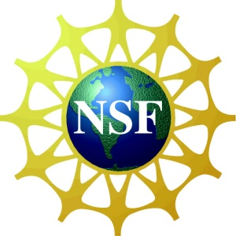

The 2012 IEEE International
Symposium on Performance Analysis of Systems and Software is sponsored by the
IEEE Computer Society's Technical
Committee on Internet,
Technical
Committee on Computer Architecture, and
Technical
Committee on Microprogramming and Microarchitecture.
-
"BigHouse: A simulation infrastructure
for data center systems [David Meisner et al., University of Michigan] is
selected as
the best paper. The
BigHouse
Simulator is available online.
-
Local area map and information (PDF)
-
Keynotes:
-Systems management in the
age of cloud, Dr. Mazda Marvasti (VMware)
-Parallelism, Heterogeneity, Communication: Emerging
Challenges for Performance Analysis, Prof. Margaret Martonosi
(Princeton University)
-
Registration
site is available (Early registration deadline is
March 12, 2012)
-
Hotel information
is available (Cutoff date is March 10, 2012)
-
Preliminary program
-
Student travel grant
is available (Due: February 29, 2012)
-
Final submission
guidelines
-
Workshops/Tutorials
information is available
-
Submission
guideline and site is available
-
ISPASS 2012 will be held at New Brunswick, NJ (April 1-3,
2012)
-
ISPASS2012
on Twitter
Important
Dates
Paper
registration and Abstract
submissions due: October 3, 2011
Full
submissions due: October 7, 2011
(No further
extensions will be given)
Rebuttal:
December 3-6, 2011
Notification of acceptance: December 21, 2011
Final paper due: February 5, 2012
Sponsors
|
|
IEEE-CS TC uARCH
|
|
|
|
|
|
 |
For further information, please
contact the Program or General Chair:
General Chair
Rajeev
Balasubramonian, University of Utah
Program Chair
Vijayalakshmi Srinivasan, IBM T.J. Watson Research Center


This website is maintained by the ISPASS-2012 Committee.
Contact
Byeong Kil Lee
if you have any questions or comments on this
website.